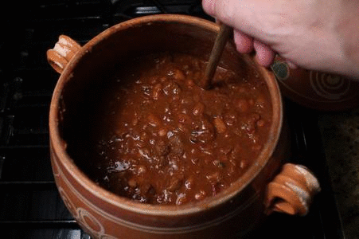

Mouthwatering Vegeterian Chili

Description
Break out your soup pot and fix up a batch of this delicious, spicy vegetarian chili today! It's ready in no time, and packed with vegetables, beans - and flavor!
Ingredients
- 1 tablespoon olive oil
- ½ medium onion, chopped
- 2 bay leaves
- 1 teaspoon ground cumin
- 2 tablespoons dried oregano
- 1 tablespoon salt
- green bell peppers, chopped
- 2 (4 ounce) cans chopped green chile peppers, drained
- (28 ounce) cans whole peeled tomatoes, crushed
- ¼ cup chili powder
- tablespoon ground black pepper
- (15 ounce) can garbanzo beans, drained
- (15 ounce) can black beans
- (15 ounce) can whole kernel corn
Instructions
- Heat the olive oil in a large pot over medium heat. Stir in the onion, and season with bay leaves, cumin, oregano, and salt. Cook and stir until onion is tender, then mix in the celery, green bell peppers, jalapeno peppers, garlic, and green chile peppers. When vegetables are heated through, mix in the vegetarian burger crumbles. Reduce heat to low, cover pot, and simmer 5 minutes.
- Mix the tomatoes into the pot. Season chili with chili powder and pepper. Stir in the kidney beans, garbanzo beans, and black beans. Bring to a boil, reduce heat to low, and simmer 45 minutes. Stir in the corn, and continue cooking 5 minutes before serving.
- Enjoy! :)